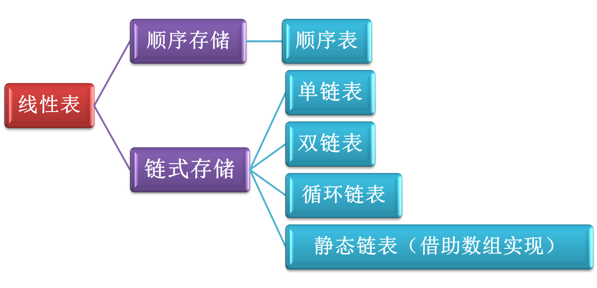
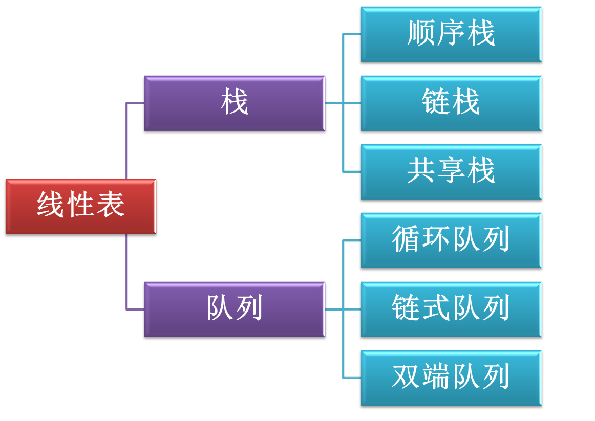
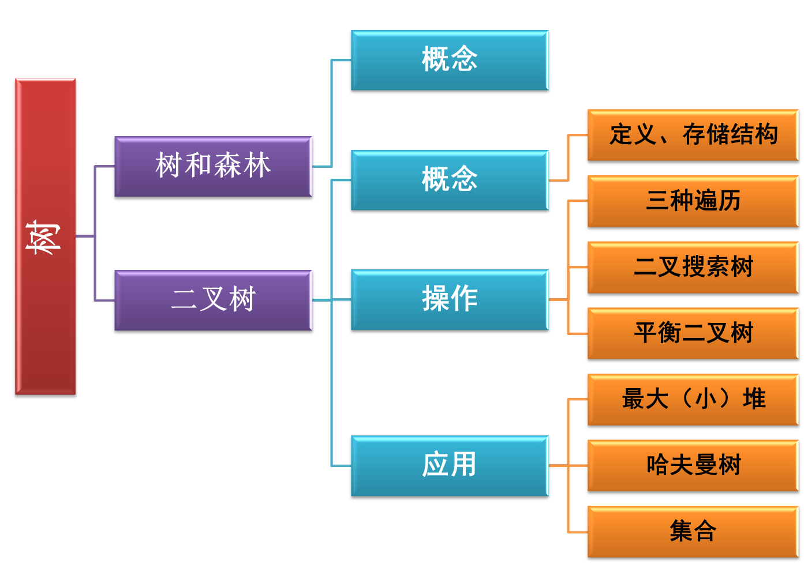
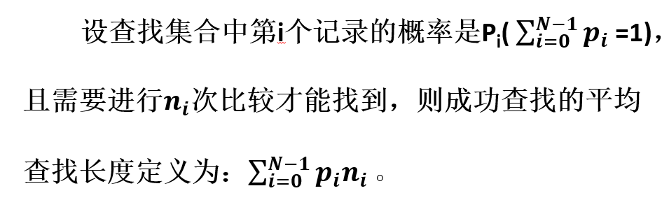
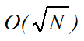
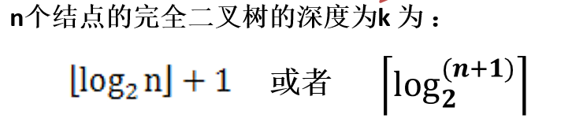
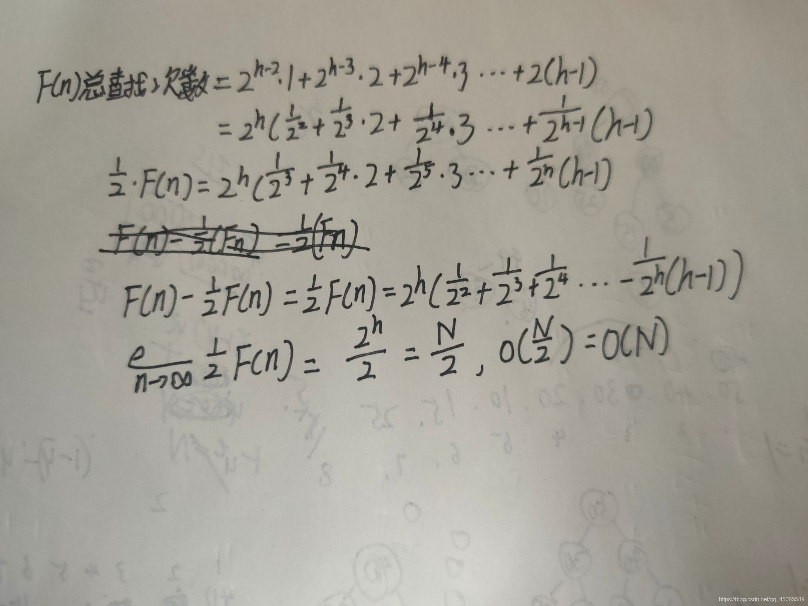
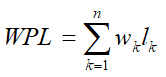
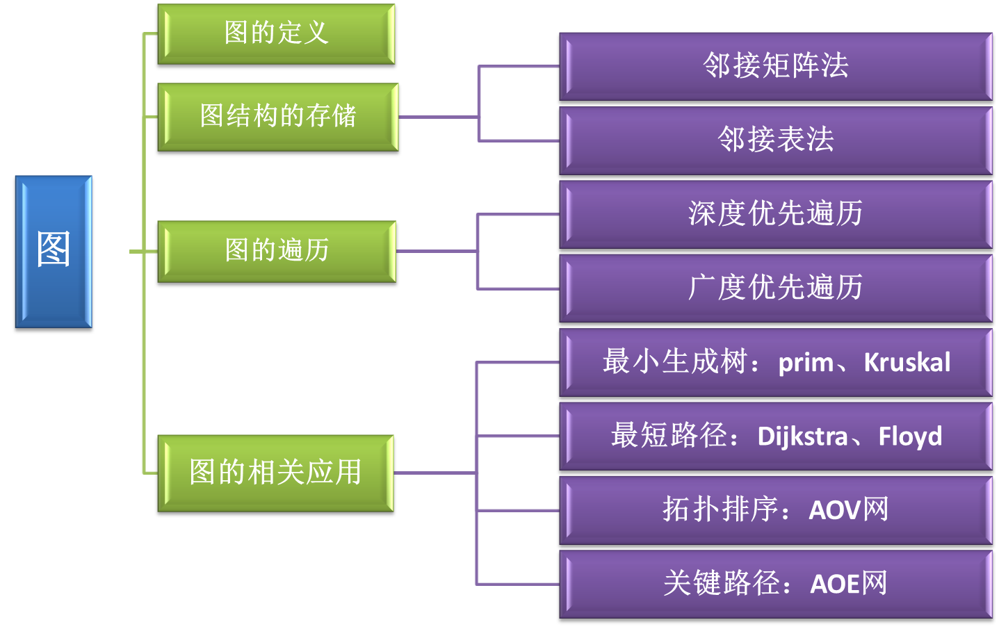
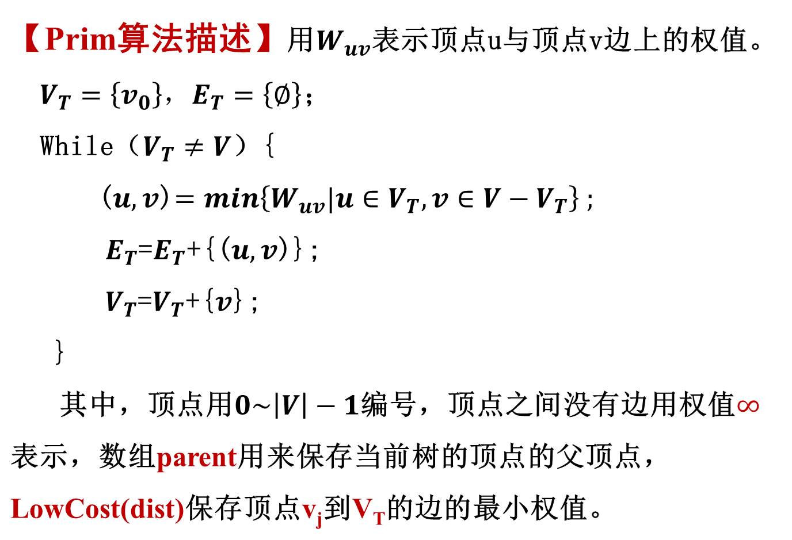

太好了是期末周我们没救了
线性结构

顺序表
1 | struct LNode{ |
链表
1 | struct LNode{ |
带头结点查找指定序号时大多cnt=0，一般从1开始编号，不过还是按实际情况判断吧！><
定义三元组(a, b, c)（其中a, b, c均为正数）的距离D=|a-b| + |b-c| + |c-a|。给定三个非空整数集合S1、S2和S3，按升序分别存储在3个数组中。设计一个尽可能高效的算法，计算并输出所有可能的三元组(a, b, c)（a∈S1, b∈S2, c∈S3）中的最小距离。
要求：
（1）给出算法的基本设计思想。
（2）根据设计思想，采用 C 语言描述算法，关键之处给出注释。
（3）说明你所设计算法的时间复杂度和空间复杂度。
【算法基本设计思想】
1）使用Dmin记录所有已处理的三元组的最小距离
2）S1、S2、S3分别保存在数组A、B、C中。数组的下标变量i=j=k=0，当i<|S1|&&j<|S2|&&k<|S3|时，执行下面的循环操作：
- 计算(A[i]、B[j]、C[k])的距离D；
- 若D<Dmin，则Dmin=D；
- 将A[i]、B[j]、C[k]中的最小值的下标+1（对照分析，最小值为a，最大值为c时，c 不变而更新a，寻找更小的距离）
3）输出Dmin，结束。
链式存储结构比顺序存储结构能更方便地表示各种逻辑结构（顺序存储只能用物理上的邻接关系来表示逻辑结构）
广义表与多重链表
广义表中元素可以是另一个广义表
一个链表，其元素可能还是另一个子链表的起点指针，叫“多重链表”

栈
“ 堆栈（Stack）”可以认为是具有一定操作约束的线性表，插入和删除操作都作用在一个称为栈顶(Top)的端点位置。
1、Stack CreateStack( int MaxSize )： 生成空堆栈，其最大长度为MaxSize；
2、bool IsFull( Stack S )：判断堆栈S是否已满。若S中元素个数等于MaxSize时返回true；否则返回false ；
3、bool Push( Stack S, ElementType X )：将元素X压入堆栈。若堆栈已满，返回false；否则将数据元素X插入到堆栈S栈顶处并返回true；
4、bool IsEmpty ( Stack S )：判断堆栈S是否为空，若是返回true；否则返回false；
5、ElementType Pop( Stack S )：删除并返回栈顶元素。若堆栈为空，返回错误信息；否则将栈顶数据元素从堆栈中删除并返回。1
2
3
4
5
6
7
8typedef int Position;
typedef struct SNode *PtrToSNode;
struct SNode {
ElementType *Data; /* 存储元素的数组 */
Position Top; /* 栈顶指针 */
int MaxSize; /* 堆栈最大容量 */
};
typedef PtrToSNode Stack;
顺便一提，我常写的版本是：1
2
3
4
5
6typedef struct SNode *Stack;
struct SNode {
int *Data; /* 存储元素的数组 */
int stacksize; /* 栈储存数 其实没区别！*/
int capacity; /* 堆栈最大容量 */
};
共享栈:在数组头和尾设栈，top相遇则满
堆栈的链式存储实现
栈的链式存储结构实际上就是一个单链表，叫做链栈。插入和删除操作只能在链栈的栈顶进行；栈顶指针Top就是链表的头指针。
堆栈应用：表达式求值
中缀表达式转换为后缀表达式
- 如果遇到空格则认为是分隔符，不需处理；
- 若遇到运算数，则直接输出；
- 若是左括号，则将其压入堆栈中；
- 若遇到的是右括号，表明括号内的中缀表达式已经扫描完毕，将栈顶的运算符弹出并输出，直到遇到左括号（左括号也出栈，但不输出）；
- 若遇到的是运算符，若该运算符的优先级大于栈顶运算符的优先级时，则把它压栈；若该运算符的优先级小于等于栈顶运算符时，将栈顶运算符弹出并输出，再比较新的栈顶运算符，按同样处理方法，直到该运算符大于栈顶运算符优先级为止，然后将该运算符压栈；
- 若中缀表达式中的各对象处理完毕，则把堆栈中存留的运算符一并输出。
队列
“队列(Queue)” 是具有一定操作约束的线性表，插入和删除操作有一定要求：只能在一端插入，而在另一端删除。
1、Queue CreatQueue(int MaxSize )：生成长度为MaxSize的空队列；
2、bool IsFullQ(Queue Q)：判断队列Q是否已满，若是返回true；否则返回false；
(Q->Rear+1)%Q->MaxSize = = Q->Front;
3、 bool AddQ(Queue Q, ElementType X )： 将元素X压入队列Q。若队列已经满了，返回false；否则将数据元素X插入到队列Q并返回true；
Q->Rear = (Q->Rear+1)%Q->MaxSize;
4、 bool IsEmptyQ(Queue Q )：判断队列Q是否为空，若是返回true；否则返回false；
5、ElementType DeleteQ(Queue Q )：删除并返回队列头元素。若队列为空，返回错误信息；否则将队头数据元素从队列中删除并返回。
(Q->Front+1)%Q->MaxSize;
按照教材来说，Front不放东西，Rear放东西。1
2
3
4
5
6
7
8typedef int Position;
typedef struct QNode *PtrToQNode;
struct QNode {
ElementType *Data;
Position Front, Rear;
int MaxSize;
};
typedef PtrToQNode Queue;
队列的链式存储实现
队列采用链式存储结构，队列的头必须指向链表的头结点，队列的尾指向链表的尾结点。
双端队列
双端队列进队时，前端进的元素排列在队列中后端进的元素的前面，后端进的元素排列在队列中前端进的元素的后面。在双端队列出队时，无论是前端还是后端，出队先出的元素排列在后出的元素的前面。
树

【查找的效率】静态查找用“平均查找长度”（ASL，Average Search Length）来衡量。

二分查找
1 | Position BinarySearch( List Tbl, ElementType K ) |
二分查找算法具有对数的时间复杂度O(logN)
树的定义
树是n（n≥0）个结点构成的有限集合。当n=0时，称为空树；
对于任一棵非空树（n> 0），它具备以下性质：
- 树中有一个称为“根（Root）”的特殊结点，用 r 表示；
- 其余结点可分为m(m>0)个互不相交的有限集T1，T2，… ，Tm，其中每个集合本身又是一棵树，这些树称为原来树的“子树（SubTree）”。每个子树的根结点都与 r 有一条相连接的边，r是这些子树根结点的“父结点(Parent)”
- 子树是不相交的；
- 除了根结点外，每个结点有且仅有一个父结点；
- 一棵N个结点的树有N-1条边。=>树中的结点数等于所有结点的度数之和加1
重要术语
结点的度（Degree）：一个结点的度是其子树的个数。
树的度：树的所有结点中最大的度数
度为m的树中第i层上至多有mi-1个结点（i>=1）
祖先结点(Ancestor)：沿树根到某一结点路径上的所有结点都是这个结点的祖先结点。
子孙结点(Descendant)：某一结点的子树中的所有结点是这个结点的子孙。
结点的层次（Level）：规定根结点在1层，其它任一结点的层数是其父结点的层数加1。
树的高度（Height）：树中所有结点中的最大层次是这棵树的高度，自底向上计数。注意：和树的深度的区别
树最适合用来表示元素之间具有分支层次关系的数据
二叉树
一棵二叉树T是一个有穷的结点集合。这个集合可以为空，若不为空，则它是由根结点和称为其左子树TL和右子树TR的两个不相交的二叉树组成。可见左子树和右子树还是二叉树。
二叉树与树不同，除了每个结点至多有两棵子树外，子树有左右顺序之分。
二叉树平均深度
深度为k的二叉树有最大结点总数为：2^k-1,k>=1.
对任何非空的二叉树 T，若n0表示叶结点的个数、n2是度为2的非叶结点个数，那么两者满足关系n0 = n2 +1
n=n0+n1+n2
完全二叉树
斜二叉树(Skewed Binary Tree)（也称为退化二叉树）（不想放图了，歪的
完美二叉树(Perfect Binary Tree)
一棵深度为k的有n个结点的二叉树，对树中的结点按从上至下、从左到右的顺序进行编号，如果编号为i（1 ≤ i ≤ n）的结点与满二叉树中编号为 i 的结点在二叉树中的位置相同，则这棵二叉树称为完全二叉树(Complete Binary Tree)。

(感觉左边这个比较好理解><)
【习题】若一棵完全二叉树有768个结点，则该二叉树中叶结点的个数是>（ ）。
A. 257；
B. 258；
C. 384；
D. 385；【习题】已知一棵完全二叉树的第6层（设根为第1层）有8个叶结点，则该完全二叉树的结点个数最多是（ ）。
A. 39；
B. 52；
C. 111；
D. 119；
二叉树存储结构
顺序存储结构
完全二叉树最适合这种存储。
- 非根结点（序号 i > 1）的父结点的序号是 ⌊i/2⌋;
- 结点（序号为 i ）的左孩子结点的序号是 2i，2i<= n，否则没有左孩子）;
- 结点（序号为 i ）的右孩子结点的序号是 2i+1，2i+1<= n，否则没有右孩子）;
一般二叉树采用这种结构将造成空间浪费！（中间的编号没有节点）
链表存储
1 | typedef struct TNode *Position; |
二叉树的遍历
中序遍历：左-根-右
先序遍历：根-左-右
后序遍历：左-右-根
递归遍历
以中序遍历为例。1
2
3
4
5
6
7
8void InOrderTraversal( BinTree BT )
{
if( BT ) {
InOrderTraversal( BT->Left );
printf(“%d”, BT->Data);
InOrderTraversal( BT->Right );
}
}
若某非空二叉树的先序序列和后序序列正好相反，则该二叉树的形态是什么？如果正好相同，又该是什么形态呢？
先序是NLR，后序是LRN，现在是NLR=NRL，则L或者R为空，所以二叉树的每层只有一个结点，即二叉树的形态要求是其高度等于结点个数。
如果要求NLR=LRN，则LR都应该为空，即二叉树只有一个根结点若一棵二叉树的前序遍历序列为a,e,b,d,c，后序遍历序列为b,c,d,e,a，则根结点的孩子结点（ ）。
A.只有e B.有e、b C.有e、c D. 无法确定
由前序和后序序列可以判断a是根结点，如果e和b是兄弟结点，那么前序和后序e、b的顺序不会改变，所以b不是e的兄弟结点
创建二叉树
按先序创建(ABD##E##CF###)1
2
3
4
5
6
7
8
9
10
11
12
13BinTree Create_Bintree( ) {
BinTree BT;
char ch;
if((ch = getchar( )) == '#')
BT = NULL;//空子树
else{
BT = (BinTree)malloc(sizeof(TreeNode));
BT ->data = ch;
BT ->lchild=Create_Bintree( );
BT ->rchild=Create_Bintree( );
}
return BT;
}
按层序创建1
2
3
4
5
6
7
8
9
10
11
12
13
14
15
16
17
18
19
20
21
22
23
24
25
26
27
28
29
30
31
32
33
34BinTree CreatBinTree( ){
ElementType Data;
BinTree bt, t;
Queue Q=CreatQueue( );
printf("请以数字的形式输入结点信息：\n");
scanf("%d", &Data);
if( Data==NoInfo )
return NULL;
//生成一个二叉树结点
bt=(BinTree)malloc(sizeof(struct TNode));
bt->data=Data;
bt->Left=bt->Right=NULL;
AddQ(Q,bt);
while(!IsEmpty(Q)) {
t=DeleteQ(Q);
scanf("%d",&Data);
if(Data==NoInfo) t->Left=NULL;
else{
t->Left=(BinTree)malloc(sizeof(struct TNode));
t->Left->data=Data;
t->Left->Left=t->Left->Right=NULL;
AddQ(Q,t->Left);
}
scanf("%d",&Data);
if(Data==NoInfo) t->Right=NULL;
else{
t->Right=(BinTree)malloc(sizeof(struct TNode));
t->Right->data=Data;
t->Right->Left=t->Right->Right=NULL;
AddQ(Q,t->Right);
}
}
return bt;
}
求二叉树的高度
1 | int GetHeight( BinTree BT ) |
二元运算表达式树及其遍历
中缀表达式会受到运算符优先级的影响
中缀转后缀(先转换完表达式)用的原则是遇到的运算符的优先级大于等于栈里的运算符时，该运算符入栈
读到运算符，从堆栈中弹出两个元素，构成新的二叉树，并将指向它的指针压栈
更多例题参看P124图4.23
由两种遍历序列确定二叉树
必须要有中序遍历才行！
先序遍历序列的第一个结点就是根结点；
这个根结点能够在中序遍历序列中将其余结点分割成两个子序列。
在先序序列中找到对应的左子序列和右子序列，对应左子树和右子树。
然后分别递归使用相同的方法继续分解。
非递归遍历
中序遍历
- 遇到一个结点就把它压入栈；
- 沿着这个结点的左孩子，依次入栈，直到左孩子为空，说明已经找到可以输出的结点；
- 栈顶元素出栈并访问：若其右孩子为空，继续执行第3步，若其右孩子不空，将右子树转执行第1步；
1
2
3
4
5
6
7
8
9
10
11
12
13
14
15
16
17
18void InorderTraversal( BinTree BT ) {
BinTree T;
int MaxSize;
printf("请输入堆栈所容纳的最大值：");
scanf("%d",&MaxSize);
Stack S = CreateStack(MaxSize); /* 创建空堆栈S，元素类型为BinTree*/
T = BT; /* 从根结点出发 */
while( T || !IsEmpty(S) ){
while( T ){
Push(S, T);
T = T->Left;
}
T = Pop(S); /* 结点弹出堆栈 */
printf("%c ", T->Data); /*（访问）打印结点 */
T = T->Right; /* 转向右子树 */
}
printf("\n");
}层序遍历
- 从队列中取出一个元素；
- 访问该元素所指结点；
- 若该元素所指结点的左、右孩子结点非空，则将其左、右孩子的指针顺序入队。
1
2
3
4
5
6
7
8
9
10
11
12
13
14
15
16
17void LevelorderTraversal ( BinTree BT ) {
Queue Q;
BinTree T;
int size;
if ( !BT )
return; /* 若是空树则直接返回 */
printf("输入队列的规模\n");
scanf("%d",&size);
Q = CreatQueue(size); /* 创建空队列Q */
AddQ( Q, BT );
while ( !IsEmpty(Q) ) {
T = DeleteQ( Q );
printf("%c ", T->Data);
if ( T->Left ) AddQ( Q, T->Left );
if ( T->Right ) AddQ( Q, T->Right );
}
}话说回来，之前做层序遍历的时候，用java做了个递归方法的
1
2
3
4
5
6
7
8
9
10
11
12
13
14
15
16
17//递归算法
>class Solution {
List<List<Integer>> List = new ArrayList<>();
public void level(TreeNode node,int level){
if(List.size()==level){
List.add(new ArrayList<>());
}
List.get(level).add(node.val);
if(node.left!= null)level(node.left,level+1);
if(node.right!= null)level(node.right,level+1);
}
public List<List<Integer>> levelOrder(TreeNode root) {
if(root == null)return new ArrayList<>();
level(root,0);
return List;
}
>}对我个人而言，这比队列的非递归算法好理解的多，不过这是因为java有list可以直接add()
对于c语言而言，要这样写必须要使用多重链表
二叉搜索树
“二叉搜索树（BST，Binary Search Tree）”也称二叉排序树或二叉查找树，它是一种对排序和查找都很有用的特殊二叉树。
它可以为空。如果不为空。
它将满足以下性质：
非空左子树的所有键值小于其根结点的键值。
非空右子树的所有键值大于其根结点的键值。
左、右子树都是二叉搜索树。
不可以有等于的值出现。
动态查找
查找x->非递归查找(快)
查找min/max->最左端/最右端
插入
1 | BinTree Insert( BinTree BST, ElementType X ) |
搜索二叉树插入一定能插入到最下面。
感觉上面那个算法不用递归直接迭代while(BST) BST=BST->Right就行，记录最后一个BST的值，出来的时候新生成tnode，让最后一个bst指向他，通过大小判断左/右。
…..这样想完以后感觉确实是递归简洁一些。
删除
要删除的结点有左、右两棵子树时，有两个选择：
- 取右子树中的最小元素替代
- 取左子树中的最大元素替代
1 | BinTree Delete( BinTree BST, ElementType X ) |
平衡二叉树
查找二叉搜索树（BST）的时间复杂度（最坏情况下）用查找过程中的比较次数来衡量，它取决于树的深度。
平均查找长度ASL
假设二叉搜索树中每个结点的查找概率都是相同的，则查找所有结点的比较次数的平均值称为“平均查找长度”
ASL=∑(深度x节点个数)/节点总数
平衡因子（Balance Factor，简称BF）：BF(T) = hL-hR(左-右)
其中hL和hR分别为T的左、右子树的高度。
平衡二叉树（Balanced Binary Tree）AVL树(可以是空树)
AVL数是二叉搜索树(BST)，任一结点左、右子树高度差的绝对值不超过1。
即|BF(T) |≤ 1。
给定结点数为 n的AVL树的最大高度为log2n+1，从而保证了AVL树的查找时间性能为O(log2n)
最小平衡二叉树的结点公式：F(n)=F(n-1)+F(n-2)+1
其中n是avl的高度,+1是有一个节点连接了两边。
【习题】若平衡二叉树的高度为6，且所有非叶子结点的平衡因子均为1，则该平衡二叉树的结点总数为
调整
请看VCR
个人白话:
- 哪边高度高作什么旋
- 对于我校教材来说，x旋=x手螺旋的方向
- 判断最下面的节点的位置在失衡节点x的孩子的y子树上
switch xy:- RR 对失衡节点右旋
- LL 对失衡节点左旋
- RL 左旋右孩子，再对失衡节点右旋
- LR 右旋左孩子，再对失衡节点左旋
- 当x旋的位置有节点挡着时，这个节点成为旋转节点另一边的孩子。
- ⚠️当没有节点挡着，不改变边连线。
堆
优先队列（Priority Queue）从堆中取出元素的顺序是依照元素的优先权（关键字）大小，而不是元素进入队列的先后顺序。
堆（Heap）:采用完全二叉树存储的优先队列。
- 最大堆(MaxHeap):每个结点上的元素值不小于其子结点元素的值。
- 最小堆(MinHeap):任一结点的值小于或等于其子结点的值。
- 兄弟结点之间不存在约束关系
↑可以有相同的元素出现。
特性：用数组表示的完全二叉树(起始单元为1)
堆在代码上并没有标志性的树结构，看上去只是数组操作。1
2
3
4
5
6
7
8typedef struct HNode *Heap; /* 堆的类型定义 */
struct HNode {
ElementType *Data; /* 存储元素的数组 */
int Size; /* 堆中当前元素个数 */
int Capacity; /* 堆的最大容量 */
};
typedef Heap MaxHeap; /* 最大堆 */
typedef Heap MinHeap;
创建
1 | MaxHeap CreateHeap( int MaxSize ) |
插入
完全二叉树->最新节点的位置是固定的
用要插入元素向下过滤上层结点（相当于要插入的元素向上渗透）。1
2
3
4
5
6
7
8
9
10
11
12
13
14bool Insert( MaxHeap H, ElementType X )
{ /* 将元素X插入最大堆H，其中H->Data[0]已经定义为哨兵 */
int i;
if ( IsFull(H) ) {
printf("最大堆已满");
return false;
}
i = ++H->Size;
for ( ; H->Data[i/2] < X; i/=2 )//直到父节点大于x
//哨兵=>顶层元素可以被比较。
H->Data[i] = H->Data[i/2]; /* 上滤X */
H->Data[i] = X; /* 将X插入 */
return true;
}
T(N)=O(logn)
删除
向下渗透1
2
3
4
5
6
7
8
9
10
11
12
13
14
15
16
17
18
19
20
21
22
23
24ElementType DeleteMax( MaxHeap H )
{
int Parent, Child;
ElementType MaxItem, X;
if ( IsEmpty(H) ) {
printf("最大堆已为空");
return ERROR;
}
MaxItem = H->Data[1]; /* 取出根结点存放的最大值 */
/* 用最大堆中最后一个元素从根结点开始向上过滤下层结点 */
X = H->Data[H->Size--]; /* 注意当前堆的规模要减小 */
for( Parent=1; Parent*2<=H->Size; Parent=Child ) {
Child = Parent * 2;
if( (Child!=H->Size) &&
(H->Data[Child]<H->Data[Child+1]) )
Child++; /* Child指向左右子结点的较大者 */
if( X >= H->Data[Child] )
break; /* 找到了合适位置 */
else /* 下滤X */
H->Data[Parent] = H->Data[Child];
}
H->Data[Parent] = X;
return MaxItem;
}
建立
即如何将已经存在的N个元素按最大堆的要求存放在一个一维数组中。
方法一：将N个元素一个个相继插入到一个初始为空的堆中去，O(NlogN)
方法二：在线性时间复杂度下建立最大堆
- 将N个元素按输入顺序存入二叉树中，这一步只要求满足完全二叉树的结构特性，而不管其有序性。
- 调整各结点元素，以满足最大堆的有序特性。
1 | void PercDown( MaxHeap H, int p ) |
T(N)=O(N)
每个perdown的比较次数只和那个节点的高度有关。远远达不到N

虽然字丑但是简单易懂的证明↑
哈夫曼树
带权路径长度（Weighted PathLength），简称WPL:
设一棵二叉树有n个叶子结点，每个叶子结点带有权值 wk，从根结点到每个叶子结点的长度为 lk，则每个叶子结点的带权路径长度之和就是这棵树的带权路径长度。

达到WPL最小的二叉树就称为最优二叉树或哈夫曼树
不唯一。左右子树互换就是不同的二叉树。
构造
每次把权值最小的两棵二叉树合并1
2
3
4
5
6
7
8
9
10
11
12
13
14
15HuffmanTree Huffman( MinHeap H )
{
int i, N;
HuffmanTree T;
BuildHeap(H); /* 将H->Data[ ]按权值Weight调整为最小堆 */
N = H->Size;
for ( i=1; i<N; i++ ) { /* 做H->Size-1次合并 */
T = (HuffmanTree)malloc(sizeof(struct HTNode));
T->Left = DeleteMin(H);
T->Right = DeleteMin(H);
T->Weight = T->Left->Weight+T->Right->Weight;
Insert( H, T ); /* 将新T插入最小堆 后调整为最小堆*/
}
return DeleteMin(H);
}
最上面的数字是总权重，不是wpl。
用堆是因为最大堆查找快。
哈夫曼树的特点：
- 没有度为1的结点，因为构造方法导致的。
- n个叶子结点的哈夫曼树共有2n-1个结点(n1=0)
- 哈夫曼树的任意非叶结点的左右子树交换后仍是哈夫曼树
哈夫曼编码
所有字符都只出现在“满二叉树”(full tree)的叶子上时任何码串都可以无二义地解码–—— 这样的码叫做前缀码prefix code.
度为1->出现相同前缀
WPL计算的是边的数量
集合及其运算
这不是有向图吗
逻辑上，可以用树结构表示集合，树的每个结点代表一个集合元素。
图

G =（V, E）。每条边是一个顶点对（v, w)∈ E ，并且 v, w ∈ V。
图的定义和术语
看书吧！晕字了
有向边也称“弧（Arc）”
简单图（Simple Graphs）:没有重边和自回路的图。
简单路径：除了路径的首（ vp ）尾（ vq ）顶点外，vi1, vi2, ···, vin 都是不同顶点
回路：起点和终点相同（vp = vq ）的路径，简单路径形成的回路称为简单回路
无环图 ：不存在任何回路的图。
有向无环图 ::= 不存在回路的有向图，也称DAG （Directed Acyclic Graph）
无向完全图：在无向简单图中，任意两顶点都有一条边相连接
无向图的顶点连通、连通图、连通分量：
无向图中任意两顶点都是连通的，则称该图是“连通图（Connected Graph）”。
无向图的极大连通子图称为“连通分量（Connected Component）”。连通分量的概念包含以下4个要点：
- 子图——连通分量是原图的子图
- 连通——连通分量本身是连通的
- 极大顶点数——再加入其他顶点，将导致子图不连通
- 极大边数——具有极大顶点数的连通子图，包含依附于这些顶点的所有边。
有向图中任意一对顶点vi 和vj (i≠j)均既有从vi到vj的路径，也有从vj到vi的路径，则称该有向图是“强连通图（Strongly Connected Graph）”。
有向图的极大强连通子图称为“强连通分量”。连通分量的概念也包含前面4个要点。
树是图的特例：无环的无向图。
所谓连通图G的“生成树（Spanning Tree）”，是G的包含其全部n 个顶点的一个极小连通子图。它必定包含且仅包含G的n-1条边。
生成森林：图的各棵生成树组成了一个图的生成森林。←这不就集合
边的两倍是所有顶点的度之和
关于无向连通图特性的描述中，正确的是（ ）
I.所有顶点的度之和为偶数
II.边数大于顶点个数减1
III.至少有一个顶点的度为1
A.只有I B.只有II C.I和II D.I和III具有6个顶点的无向图，当有（ ）条边时能确保是一个连通图。
A.10 B. 11 C. 13 D. 15
邻接矩阵
S=O(|V|^2),确定有多少条边T=O(|V|^2)1
2
3
4
5
6
7
8
9
10
typedef struct GNode *PtrToGNode;
struct GNode{
int Nv; /* 顶点数 */
int Ne; /* 边数 */
/* 邻接矩阵 */
WeightType G[MaxVertexNum][MaxVertexNum];
DataType Data[MaxVertexNum]; /* 存顶点的数据 */
};
typedef PtrToGNode MGraph; /* 以邻接矩阵存储的图类型 */
MGraph CreateGraph( int VertexNum )
初始化：e=0，e=infinity
邻接表
1 | typedef struct AdjVNode *PtrToAdjVNode; |
初始化：表头=null
一个图的邻接矩阵表示唯一，邻接表表示不唯一
邻接表体现的是边的信息，和顶点无关
若邻接表中有奇数个边表结点，则（ ）。
A.图中有奇数个结点 B.图中有偶数个结点
C.图为无向图 D.图为有向图
图的遍历
深度优先搜索
DFS1
2
3
4
5
6
7
8
9
10
11
12
13
14
15void DFS( Graph G, Vertex V, void (*Vs)(Vertex) )
{ /* 从第V个顶点出发递归地深度优先遍历图G */
(*Vs) ( V ); /* 访问第V个顶点 */
Visited[V] = true;
for ( V 的每个邻接点 W )
if ( !Visited[W] )
/* 对V的尚未访问的邻接顶点W递归调用DFS */
DFS( G, W, Visit );
}
/*void(*Vs)(Vertex v);
1，按运算符优先级， Vs 先与* 结合， 说明Vs是个指针
2，然后(*Vs) 与后面的 ()结合， 说明*Vs 是个函数
所以(*Vs)( )是个函数指针
...所以函数指针有屁用啊
*/
邻接矩阵T=O(|V|^2)
邻接表T=O(|V|+|E|)
广度优先算法
BFS
树的层数遍历的拓展，或者说层数遍历本来就是一种bfs1
2
3
4
5
6
7
8
9
10
11
12
13
14
15
16
17
18
19void BFS ( MGraph Graph, Vertex S, void (*Vs)(Vertex) )
{ /* 以S为出发点对邻接矩阵存储的图Graph进行BFS搜索 */
Queue Q;
Vertex V, W;
Q = CreateQueue( MaxSize );
/* 访问顶点S：此处可根据具体访问需要改写 */
(*Vs) ( S );
Visited[S] = true; /* 标记S已访问 */
AddQ(Q, S); /* S入队列 */
while ( !IsEmpty(Q) ) {
V = DeleteQ(Q); /* 弹出V */
for( W=0; W<Graph->Nv; W++ ) /* 对图中的每个顶点W */
if ( !Visited[W] && IsEdge(Graph, V, W) ) {
(*Vs) ( W ); /* 访问顶点W */
Visited[W] = true; /* 标记W已访问 */
AddQ(Q, W); /* W入队列 */
}
} /* while结束*/
}
实际上访问起点外面或者是在调用bfs/dfs时还要套一层循环，因为对于非连通图无法一次访问所有节点。
生成树
dfs生成->前序遍历
bfs->层序遍历
最小生成树（Minimum Spanning Tree，简记为MST）
- 最小生成树不是唯一的
- 当图G中的各边权值互不相等时，G的最小生成树是唯一的
- 最小生成树的边的权值之和总是唯一的，即最小
- 若无向连通图G的边数比顶点数少1，即G本身就是一棵树
- 最小生成树的边数为顶点数减1（树的性质
Prim算法
dist记录的是距离可连通节点的最短距离。
每次选择dist最小的点走。

Kruskal算法
- 选择一条权重最小的边；
- 判定一条边的两端是否属于同一棵树；
- 合并两棵树
最短路径
单源最短路径（ Single-Source Shortest Path）问题就是从一个源点到其他各顶点的最短路径问题。
Dijkstra算法
把prim算法的dist判定为dist[V]+Graph->G[V][W] < dist[W]
每一对顶点之间的最短路径（ All-Pairs Shortest Path）
T=O(|V|^3)
Floyd算法
形式上非常简洁优雅，对于比较稠密的图，实际运行效率更快
- 逐个选择点vx
- 排除vx行列上所有元素
- 更新其他元素路径
- 循环以上步骤nv次
拓扑排序
“有向无环图”（Directed Acyclic Graph，简称DAG
拓扑排序是指有向无环图中各顶点构成的有序序列。该序列满足如下条件：如果图中一顶点vi到另一顶点vj存在一条路径，那么vj在此图的拓扑排序序列中位于vi之后。
理论依据：一个顶点数|V| > 1的有向图，如果每个顶点的入度都大于0，那么它必定存在回路。
- 如果找得到任何一个入度为0的顶点v，则step 2，否则step 4；
- 输出顶点v，并从图中删除该顶点以及与其相连的所有边；
- 对改变后的图重复这一过程，转step 1；
- 如果已经输出全部顶点，则结束；否则该有向图不是DAG。
核心思想是用一个队列动态记录所有入度为0的顶点1
2
3
4
5
6
7
8
9
10
11
12
13
14
15
16//省略初始化indegree
for(V=0; V<Graph->Nv; V++)
if ( Indegree[V]==0 )
AddQ(Q, V);
cnt = 0;
while( !IsEmpty(Q) ){
V = DeleteQ(Q);
TopOrder[cnt++] = V;
for(W= Graph->G[V].FirstEdge; W; W=W->Next)
if ( --Indegree[W] == 0) AddQ(Q, W);
} /* while结束*/
if ( cnt != Graph->Nv )
return false; /* 说明图中有回路 */
else
return true;
/* 拓扑排序结束*/
关键路径
AOV （Activity On Vertex）网络 是一个有向图 G ，其中V( G ) 表示活动 (比如课程) 、 E( G )表示领先关系( 比如课程 C1 先修于课程 C3 )。
一个“可行的” AOV 网络必须是DAG。否则图中有回路，从而就不能确定回路中的活动究竟哪个先实施。
改造图：
- 所有顶点转换成边；
- 入度=1的顶点的入边转换成一个顶点；
- 入度>1的顶点的入边转换成虚边(权值0)；
- 对入度>1的顶点引入额外顶点(如6’)；
- 虚边指向额外顶点
简化方法：
对出度为1且出边的权重是0，则删去该顶点及其出边
- Earliest(v) 事件v (顶点v) 的最早完成时间
- Earliest(w) = MAX{ Earliest (v) + Cv,w }
- 从Earliest (0) = 0 开始向前递推
- Earliest(n)工程完成的最早时间
- Latest(w) 事件w的最晚完成时间
- Latest (v) = MIN{ Latest(w) - Cv,w }
- Latest(n-1) = Earliest (n-1)开始向后递推
- Delay v,w = Latest[w] - Earlieat[v] - Cv,w
Delay v,w = 0 活动就是关键活动 - 由关键活动构成的最长路径叫关键路径->它的长度是工程完成时间max，所以下一题答案是B
【习题】若使用AOE网估算工程进度，则下列叙述中正确的是（ ）。
A关键路径是从源点到汇点边数最多的一条路径
B关键路径是从源点到汇点路径长度最长的路径
C增加任一关键活动的时间不会延长工程的工期
D缩短任一关键活动的时间将会缩短工程的工期
//存在多条关键路径时，缩短一条关键活动的时间不一定会缩短工程的工期，缩短了路径长度的那条关键路径不一定还是关键路径。
排序

排序算法的稳定性
在一组待排序记录中，如果存在任意两个相等的记录R和S，且在待排序记录中R在S前，如果在排序后R依然在S前，即它们的前后位置在排序前后不发生变化，则称该排序算法是稳定的。
意义：书11-25
选择排序
简单选择排序
1 | void Swap( ElementType *a, ElementType *b ){ |
T(n) = O（n^2）
S(n) = O（1）
稳定性：不稳定
堆排序
把最大堆堆顶元素元素放在最后，剩余的调整为最大堆，直到所有元素都被放置过。
先建最大堆->堆顶元素和堆的最后一个元素调换->从堆顶元素自上而下调整为最大堆
T(N)=O(NlogN)
S(n)=O(1) *只考虑新使用的空间，待排序数组的空间不计算。
稳定性：不稳定1
2
3
4
5
6
7
8
9
10
11
12
13
14
15
16
17
18
19
20
21
22
23
24void PercDown( ElementType A[], int p, int N )
{ int Parent, Child;
ElementType X;
X = A[p]; /* 取出根结点存放的值 */
for( Parent=p; (Parent*2+1)<N; Parent=Child ) {
Child = Parent * 2 + 1;
if( (Child!=N-1) && (A[Child]<A[Child+1]) )
Child++; /* Child指向左右子结点的较大者 */
if( X >= A[Child] ) break; /* 找到了合适位置 */
else A[Parent] = A[Child];
}
A[Parent] = X;
}
//注意：这里是*2+1，因为拿到的本质上是普通数组，序号从0开始而不是1.
//删除并不需要哨兵，因为是向下渗透。
void HeapSort( ElementType A[], int N )
{ int i;
for ( i=N/2-1; i>=0; i-- )
PercDown( A, i, N );//调整为最大堆
for ( i=N-1; i>0; i-- ) {
Swap( &A[0], &A[i] );
PercDown( A, 0, i );//剩余的i个元素调整为最大堆
}
}
插入排序
简单插入排序
将待排序的一组序列分为已排好序的和未排好序的两个部分
插入，不是交换1
2
3
4
5
6
7
8
9
10
11void InsertionSort( ElementType A[ ], int N )
{ int P, i;
ElementType Tmp;
for ( P=1; P<N; P++ ) {
Tmp = A[P];
for ( i=P; i>0 && A[i-1]>Tmp; i-- )
A[i] = A[i-1];
A[i] = Tmp; /* 放进合适的位置 */
}
}
T(N) = O(N^2)
S(n)=O(1)
稳定性：稳定
希尔排序
将待排序的一组元素按一定间隔分为若干序列，分别进行插入排序；开始时设置的“间隔”较大，在每轮排序中将间隔逐步减小，直到“间隔”为1。1
2
3
4
5
6
7
8
9
10
11
12
13
14void ShellSort( ElementType A[], int N )
{
int Si, D, P, i;
ElementType Tmp;
int Sedgewick[] = {929, 505, 209, 109, 41, 19, 5, 1, 0};
for ( Si=0; Sedgewick[Si]>=N; Si++ );
for ( D=Sedgewick[Si]; D>0; D=Sedgewick[++Si] )
for ( P=D; P<N; P++ ) {
Tmp = A[P];
for ( i=P; i>=D && A[i-D]>Tmp; i-=D )
A[i] = A[i-D];
A[i] = Tmp;
}
}
T(n) = O(N^2)
S(n) = O(1)
稳定性：不稳定
对初始基本有序的序列，可以提高时间性能。
交换排序
冒泡排序
1 | void BubbleSort( ElementType A[ ], int N ) |
T(n) = O(N^2)
S(n) = O(1)
稳定性：稳定
快速排序
选取一个基准点放在最后然后把小于这个数和大于这个数的放在两边。
再对两边进行递归。
为了避免最坏情形，确定基准时用“三者取其中”的方法，即将A[ low ]、A[ high ]、A[ ( low + high ) / 2 ]三者关键字的中值1
2
3
4
5
6
7
8
9
10
11
12
13
14
15
16
17
18
19
20
21
22
23
24
25
26
27
28
29
30
31
32
33
34
35
36
37ElementType Median3( ElementType A[ ], int Left, int Right ){
int Center = (Left+Right) / 2;
if ( A[Left] > A[Center] )
Swap( &A[Left], &A[Center] );
if ( A[Left] > A[Right] )
Swap( &A[Left], &A[Right] );
if ( A[Center] > A[Right] )
Swap( &A[Center], &A[Right] );
Swap( &A[Center], &A[Right-1] );
/* 只需要考虑A[Left+1] … A[Right-2] */
return A[Right-1]; /* 返回基准Pivot */
}
void Qsort( ElementType A[], int Left, int Right )
{
int Pivot, Cutoff, Low, High;
if ( Cutoff <= Right-Left ) { /* 如果序列元素充分多，进入快排 */
Pivot = Median3( A, Left, Right ); /* 选基准 */
Low = Left; High = Right-1;
while (1) { /*将序列中比基准小的移到基准左边，大的移到右边*/
while ( A[++Low] < Pivot ) ;
while ( A[--High] > Pivot ) ;
if ( Low < High )
Swap( &A[Low], &A[High] );
else
break;
}
Swap( &A[Low], &A[Right-1] ); /* 将基准换到正确的位置 */
Qsort( A, Left, Low-1 ); /* 递归解决左边 */
Qsort( A, Low+1, Right ); /* 递归解决右边 */
}
else InsertionSort( A+Left, Right-Left+1 ); /* 元素太少，用简单排序 */
}
void QuickSort( ElementType A[], int N )
{ /* 统一接口 */
Qsort( A, 0, N-1 );
}
T( N ) = T( i ) + T( N – i – 1 ) + c N
T( N ) = O( N log N )
由于快速排序需要进行至少log2N层的递归，因此需要至少O(log2N)深度的栈空间。
不稳定
归并排序
将两个已排序的子序列合并成一个有序序列
基数排序
基数排序的方法一般采用“主位优先法” ( Most Significant Digit First, MSD) 或者“次位优先法” ( Least Significant Digit First, LSD)